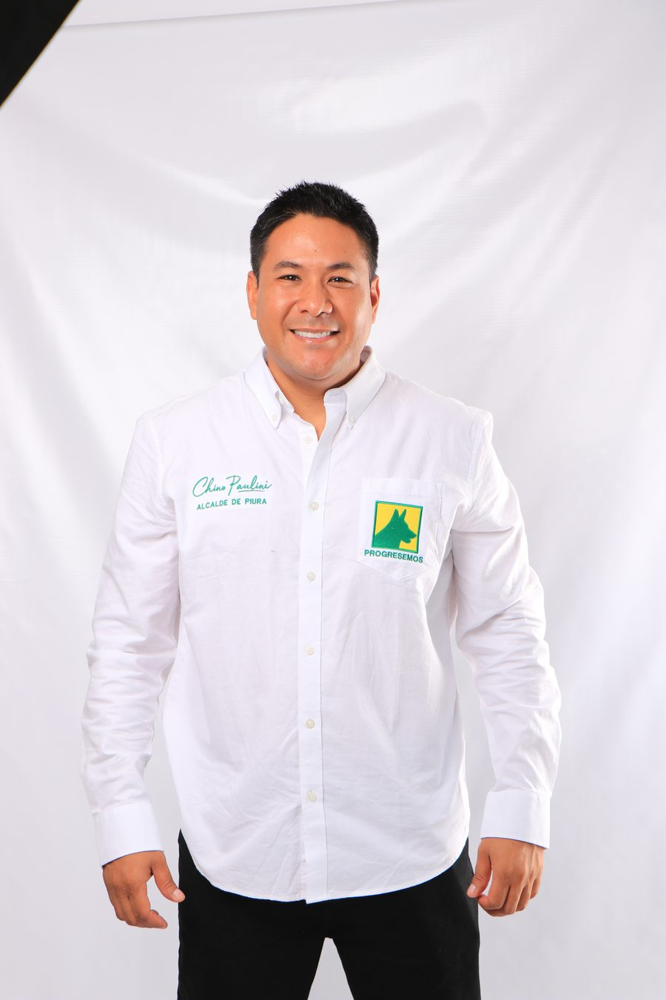

Soy Ricardo "Chino" Paulini. Creo que Piura avanza cuando los proyectos se ejecutan con la disciplina de una empresa: metas claras, seguimiento y cuentas a la vista. Esa es la forma en que quiero seguir trabajando por mi tierra.

Cada proyecto parte de datos oficiales, define una meta medible y se ejecuta con aliados públicos y privados.
Escuelas deportivas, espacios dignos y seguimiento público a lo que se financia y no se ejecuta.
Ver proyecto → 02Formalización, capacitación y mentoría empresarial para pequeños negocios piuranos.
Ver proyecto → 03Piura accesible para personas con discapacidad y adultos mayores, todos los días del año.
Ver proyecto → 04Prevención ante El Niño, drenaje y acceso al agua con alianzas técnicas y vecinales.
Ver proyecto →Lo que funciona en una empresa funciona en lo social: objetivos, responsables, plazos y resultados que cualquiera pueda verificar.
Partimos de cifras oficiales (INEI, MEF, Contraloría) y fijamos una línea de base antes de empezar.
Proyectos con equipo, cronograma y presupuesto. Menos anuncios, más obra y más resultados.
Publicamos avances y cifras. Lo que no se puede mostrar, no se promete.
Indicadores oficiales que guían dónde enfocar los proyectos.
Empresario piurano convencido de que la gestión eficiente es la mejor política social. Después de participar en las elecciones de 2026, sigue trabajando con proyectos concretos para Piura, desde el sector privado y con la comunidad.
Su visión: una provincia donde cada familia pueda desarrollarse plenamente en un entorno seguro, resiliente y con igualdad de oportunidades.
Conocer su historia y principios →Escríbenos para sumarte como voluntario, aliado o auspiciador de los proyectos de Chino Paulini.